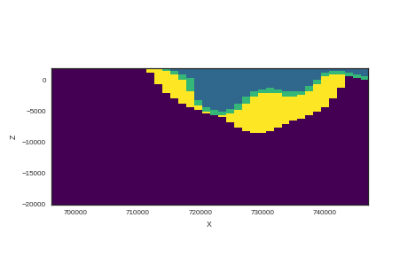
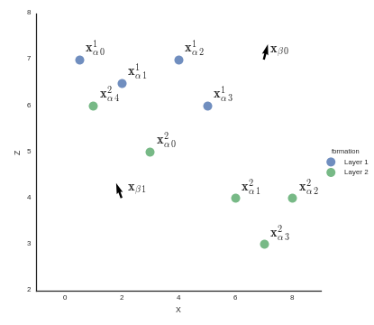

Welcome to GeMpy’s documentation!¶
A 3D Structural geologic implicit modelling in python. (v 0.3)¶
GeMpy is an opensource project for the generation of 3D structural geological modelling. The algorithm is based on a especial type of Universal cokrigin interpolation created by Laujaunie et al (1997) and developed along the past year by (add many more papers!!!). This tool allows the generation of models with relative complex structures just from data.
The results look like this:
Its implicit nature allows the user to generate complete 3D geological models through the interpolation of: - Interfaces points: 3D points in space that delimit the different formation in a given setting. - Foliations: Measurements of the poles (perpendicular to the layer) at any point in the 3D space.
In addition to the interpolation GeMpy has been created with the idea of perform Bayesian Inferences in geological modeling (de la Varga and Wellmann, 2016). Due to this, the whole interpolation algorithm has been written in the optimization packge theano (http://deeplearning.net/software/theano/) what allows the computation of gradients opening the door to the use of advance HMC methods coupling GeMpy and PyMC3 (https://pymc-devs.github.io/pymc3/notebooks/getting_started.html). Also, the use of theano allows the use of the GPU through cuda (see theano doc for more information).
Contents: